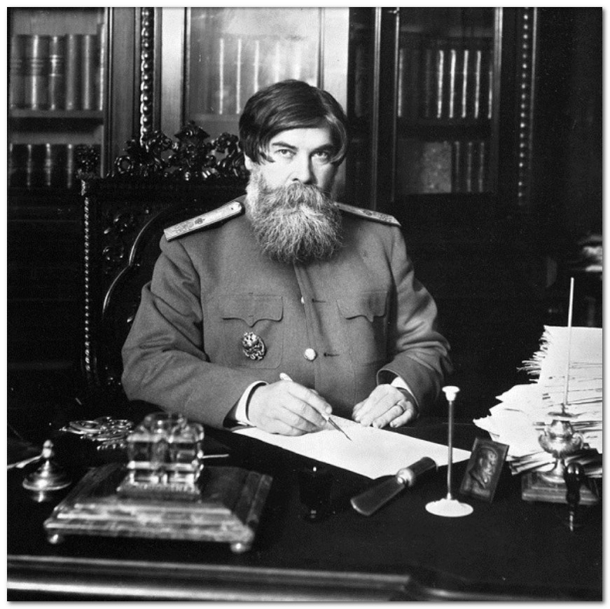

Эксперименты Бехтерева: тайны мозга, где живёт разум и память, и облако для хранения данных
Великий русский ученый, он несколько раз номинировался на Нобелевскую премию, посвятил свою жизнь раскрытию тайн человеческого мозга, лечил людей гипнозом, изучал телепатию и психологию толпы.
Мистика и материализм
Неоднозначно воспринимались современниками, особенно научным сообществом, эксперименты Владимира Бехтерева с
гипнозом. В конце XIX века к гипнозу отношение было скептическим:
его считали чуть ли не шарлатанством
и
мистикой. Бехтерев доказал: эту мистику можно использовать в исключительно прикладном ключе. Владимир
Михайлович рассылал по улицам города повозки,
собиравшие пьяниц столицы и доставлявшие их к ученому, а
после
проводил сеансы массового лечения
алкоголизма с помощью гипноза. Только тогда, благодаря невероятным
результатам лечения, гипноз признают официальным методом лечения.
Карта мозга
К вопросу изучения мозга Бехтерев подошел с энтузиазмом, присущим первооткрывателям эпохи Великих
географических открытий. В те времена мозг и был настоящей Terra Incognita.
На основании ряда
экспериментов
Бехтерев создал метод, позволяющий досконально изучить пути нервных волокон и клеток. Тысячи тончайших пластов
замороженного мозга поочередно
крепились под стеклышком микроскопа, и с них делались детальные зарисовки,
по
которым создавали «атлас головного мозга». Один из создателей таких атласов, немецкий профессор
Копш, сказал:
«Знают прекрасно устройство мозга только двое – Бог и Бехтерев».
Парапсихология
В 1918 году Бехтеревым был создан институт по изучению мозга. При нем ученый создает лабораторию по
парапсихологии, основной задачей сотрудников которой стало изучение чтения мысли на расстоянии.
Бехтерев
был
абсолютно убежден в материальности мысли и в практической телепатии. Для решения проблем мировой революции
группа ученых не только основательно занимается изучением нейробиологических
реакций, но и пытается
прочесть
язык Шамбалы, планирует поход в Гималаи в составе экспедиции Рериха.
Кстати...
Академик Бехтерев, как-то заметил, что великое счастье умереть, сохранив на дорогах жизни разум, будет дано
лишь 20% людей. Остальные к старости превратятся в злых или наивных маразматиков
и станут балластом на
плечах
собственных внуков и взрослых детей. 80% — это значительно больше, чем число тех, кому суждено заболеть раком,
болезнью Паркинсона или слечь в старости от хрупкости костей.
Чтобы войти в будущем в счастливые 20%,
начинать
важно уже сейчас.
Слабоумие никогда не приходит внезапно. Оно прогрессирует с годами, приобретая всё больше и больше власти над
человеком. То, что сейчас всего лишь предпосылки, в будущем может стать благодатной почвой
для ростков
слабоумия. Более всего оно грозит тем, кто прожил жизнь, не меняя своих установок. Такие черты как чрезмерная
принципиальность, упорство и консерватизм скорее приведут в старости к слабоумию,
чем гибкость,
способность
быстро менять решения, эмоциональность. «Главное, ребята, сердцем не стареть!»
Вот некоторые косвенные признаки, указывающие на то, что стоит заняться апгрейдом мозга.
- Вы стали болезненно воспринимать критику, в то время как сами слишком часто критикуете других.
- Вам не хочется учиться новому. Скорее согласитесь на ремонт старого мобильного телефона, чем будете разбираться в инструкции к новой модели.
- Вы часто произносите: «А вот раньше», то есть, вспоминаете и ностальгируете по старым временам.
- Вы готовы с упоением рассказывать о чем-то, невзирая на скуку в глазах собеседника. Не важно, что он сейчас заснет, главное: то, о чем вы говорите, интересно вам.
- Вам трудно сосредоточиться, когда вы начинаете читать серьезную или научную литературу. Плохо понимаете и запоминаете прочитанное. Можете сегодня прочитать половину книги, и уже завтра забыть её начало.